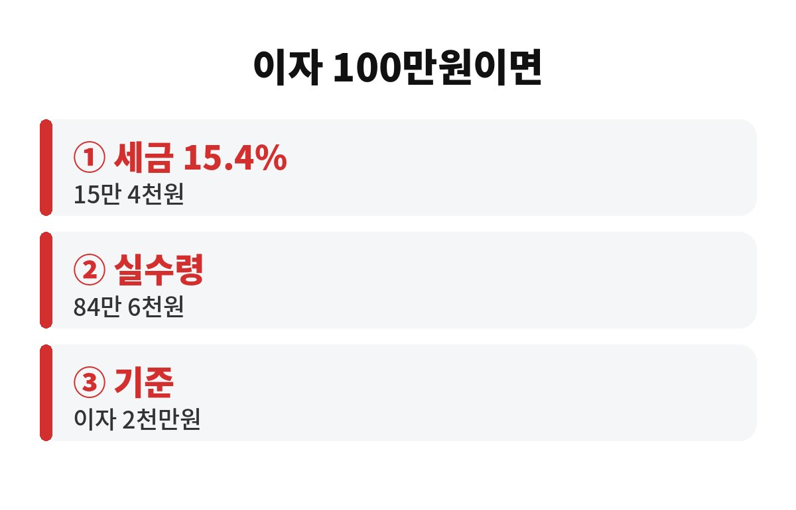

이자소득세 15.4%는 예금이나 적금 이자를 받을 때 자동으로 떼이는 세금이고, 이자가 1년에 2천만 원을 넘으면 금융소득종합과세로 세금이 더 불어날 수 있습니다. 예금 이자로 용돈 벌이하는 직장인이라면 내 통장에 실제로 얼마가 남는지 궁금하시죠?
이자소득세는 소득세 14%에 지방소득세 1.4%를 더해 15.4%입니다. 이자가 100만 원 붙었다면 15만 4천 원이 먼저 빠지고 84만 6천 원만 통장에 들어와요. 광고에 나온 금리가 연 4%라고 해도 내 손에 쥐는 금리는 그보다 낮다는 뜻이죠.
많은 분이 이 세금을 모르고 계시는데요, 은행 앱에서 보는 '세전 이자'와 '세후 이자'를 꼭 구분해서 보셔야 합니다. 상품을 비교할 때는 항상 세후 기준으로 보는 습관이 중요해요.
| 세전 이자 | 세금(15.4%) | 실수령 |
| 100만 원 | 15만 4천 원 | 84만 6천 원 |
| 500만 원 | 77만 원 | 423만 원 |
| 1,000만 원 | 154만 원 | 846만 원 |

금융소득, 즉 이자와 배당을 합쳐 1년에 2천만 원을 넘으면 금융소득종합과세 대상이 됩니다. 이때는 2천만 원까지는 기존처럼 15.4%로 끝나지만, 초과분은 근로소득이나 사업소득과 합산해서 누진세율로 다시 계산해요.
월급이 이미 많은 직장인이라면 합산 때문에 높은 세율 구간으로 올라갈 수 있습니다. 그래서 같은 이자라도 다른 소득이 많은 사람은 세금이 더 많이 나오는 구조예요. 이자가 2천만 원에 가까워지고 있다면 미리 점검해 두는 게 좋겠죠.
또 하나, 건강보험료도 소득 기준에 따라 영향을 받을 수 있어요. 특히 은퇴하신 부모님이 이자 수입으로 생활하신다면 건강보험료 기준도 한 번 살펴보시길 권합니다.
합법적으로 줄이는 방법은 분명히 있습니다. 먼저 비과세종합저축처럼 조건이 맞으면 이자에 세금이 붙지 않는 상품이 있는지 확인해 보세요. 가입 대상 조건이 정해져 있어서 본인이 해당되는지 은행에 물어보면 바로 알려 줍니다.
다음으로 ISA 같은 절세 계좌를 활용하는 방법이 있어요. 계좌 안에서 번 수익에 대해 세금 혜택을 주는 구조라 일반 계좌와 세금 계산 방식이 다릅니다. 가입 조건과 한도는 시기에 따라 달라질 수 있으니 가입 전에 금융기관 안내를 꼭 확인하세요.
마지막으로 목돈이 크다면 가족 명의로 나누어 관리하는 방법도 있지만, 증여세 문제가 걸릴 수 있어서 반드시 세무 전문가와 상담한 뒤에 하셔야 합니다. 편법으로 하면 오히려 더 큰 세금이 나올 수 있어요.
참고로 이자소득세는 이자를 받는 시점에 은행이 미리 떼고 나머지만 입금하기 때문에, 평소에는 세금을 낸다는 느낌이 거의 없습니다. 그래서 더 쉽게 놓치게 되죠. 적금이든 예금이든 만기 때 받는 금액이 예상보다 적어서 당황했다면 대부분 이 세금 때문이에요. 가입하기 전에 '세후 예상 이자'를 꼭 확인해 보세요.
금리가 높을 때는 예금 매력이 커지지만, 이자소득세 15.4%를 빼고 나면 물가 상승률과 비교했을 때 실질 수익이 생각보다 작을 수 있습니다. 세금과 물가를 함께 따져 보는 눈이 있어야 내 돈을 제대로 지킬 수 있어요.
첫째, 올해 받을 이자를 대략 계산해 보세요. 예금이 여러 은행에 흩어져 있으면 합산 금액을 놓치기 쉽습니다. 둘째, 만기가 겹치는 예금이 있다면 이자가 한 해에 몰리지 않게 만기를 나누는 것도 방법이에요. 셋째, 상품을 고를 때는 광고 금리보다 세후 금리로 비교하는 습관을 들이세요.
이자소득세 15.4%는 작아 보여도 금액이 커질수록 체감이 확 달라집니다. 여러분은 지금 이자를 세전으로만 보고 계시진 않았나요? 도움이 되셨다면 구독해 주세요.
※ 본 글은 일반적인 정보 제공이며 투자 권유가 아닙니다. 세금은 개인 상황에 따라 다르니 세무 전문가와 상담하세요.